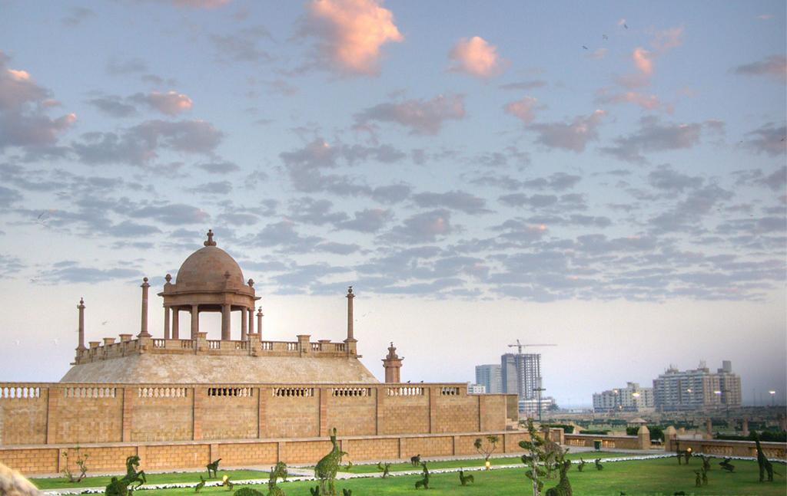
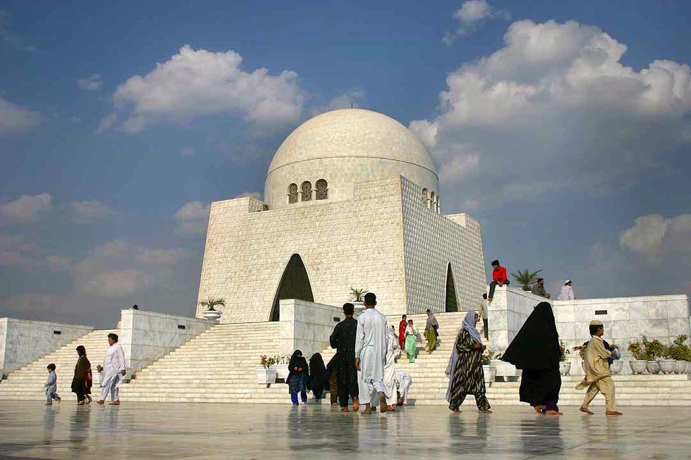
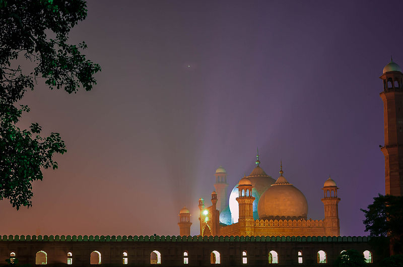
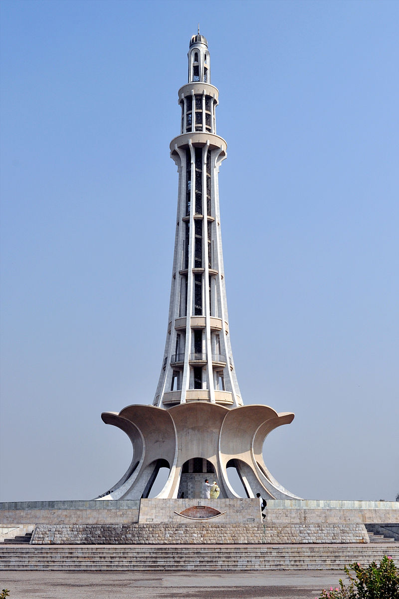
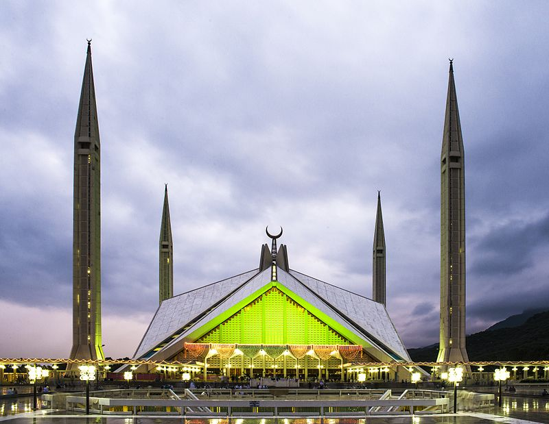
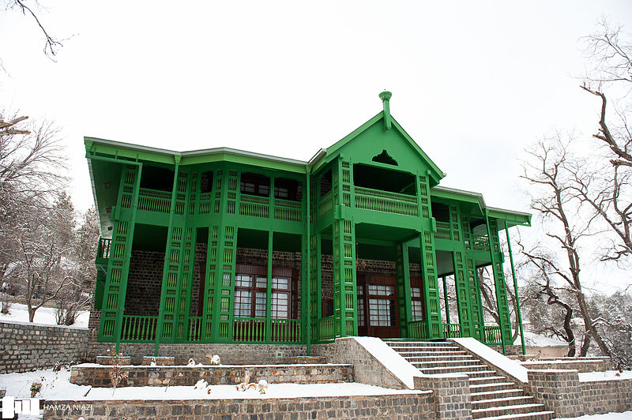

World and Cultural Heritage Sites in Pakistan
Jehangir Kothari Parade

Jehangir Kothari Parade is a promenade built on land bequeathed by Seth Jehangir Hormusji Kothari to the city of Karachi.
Jehangir Kothari Parade is a promenade built on land bequeathed by Seth Jehangir Hormusji Kothari to the city of Karachi.
It is situated in the Clifton.
There are two structures: the Promenade Pavilion and the Pier of the complex which is named after Lady Lloyd, Governor of Bombay Sir George Lloyd's wife.
This is evident in the marble plaque embedded in the pier wall that reads, "Lady Lloyd Pier".
In June 2005, City District Government Karachi (CDGK) started extensive renovation work of the promenade pier and pavilion.
The project covered more area on both sides of Lady Lloyd Pier and after some delays, the project was finally inaugurated on February 27, 2007The finished project became Pakistan's largest park.
It was constructed on 130 acres of land around the pier and the newly formed park was named as Bagh Ibne Qasim in memory of the 8th century Muslim conqueror Muhammad Bin Qasim.
The park consists of extensive lighting, pathways and lush green spaces.
Mazar-e-Quaid

Mazar-e-Quaid also known as the Jinnah Mausoleum or the National Mausoleum, is the final resting place of Quaid-e-Azam (Great Leader) Muhammad Ali Jinnah, the founder of Pakistan, as well as his sister, Māder-e Millat (Mother of the Nation) Fatima Jinnah, and Liaquat Ali Khan.
Mazar-e-Quaid also known as the Jinnah Mausoleum or the National Mausoleum, is the final resting place of Quaid-e-Azam (Great Leader) Muhammad Ali Jinnah, the founder of Pakistan, as well as his sister, Māder-e Millat (Mother of the Nation) Fatima Jinnah, and Liaquat Ali Khan.
The mausoleum completed in the 1960s, is an iconic symbol of Karachi throughout the world.
It is one of the most popular tourist destinations among foreign visitors to Karachi.
The Mausoleum building was designed by famous architect Yahya Merchant.
It is made of white marble with curved Moorish arches and copper grills reset on an elevated 54-square-meter platform.
The cool inner sanctum reflects the green of a four-tiered crystal chandelier gifted by the People's Republic of China.
Around the mausoleum is a park fitted with strong beamed spot-lights which at night project light on the white mausoleum
Badshahi Mosque

Basshahi Mosque situated outside the Lahore Fort, is one of four of the most famous examples of Mughal Architecture appreciated worldwide for its elegant blend of grace, strength, and harmony.
Basshahi Mosque situated outside the Lahore Fort, is one of four of the most famous examples of Mughal Architecture appreciated worldwide for its elegant blend of grace, strength, and harmony.
Apart from its design, it is also one of the largest mosques in the world.
The mosque has the capacity to accommodate over 100,000 worshippers.
It is said to have the largest mosque courtyard in the world for outdoor prayers.
The amazing symmetry of the three giant white marble domes that cap the numerous arches is a marvel of architecture, and the numerous other huge domes and minarets are striking from a distance.
The marble domes cover seven prayer chambers.
Four lofty minarets stand at the four corners of the mosque, each with an outer circumference of 20 metres, soaring up to 54 meters.
The mosque was built by the great Emperor Aurangzeb, composed entirely of red sandstone; it was finished in the record time of only two and half years.
Minar-e-Pakistan

Minar-i-Pakistan is one of the most important national monuments of the country.
Minar-i-Pakistan is one of the most important national monuments of the country.
The site where the Minar-e-Pakistan is built is the exact place where the historic Pakistan Resolution was passed in 1940.
The Minar expresses the spirit of that movement.
It is one of the few additions to a conglomeration of old monumental structures that are in Lahore that were mostly built by Mughals.
The base of the structure takes the shape of a five point star and is enclosed within crescent shaped pools.
The overall height is approximately sixty meters and the entire structure is constructed of reinforced concrete and furbished with stone and marble walls and floors.
Shah Faisal Mosque

Shah Faisal Mosque, one of the largest mosques in the world is located on the northern edge of the capital city of Islamabad with the Margalla Hills as a back drop.
Shah Faisal Mosque, one of the largest mosques in the world is located on the northern edge of the capital city of Islamabad with the Margalla Hills as a back drop.
The white marble geometric design with huge minarets make the mosque stunning.
The architecture is reminiscent of Istanbul mosques, with a mix of Italian and Arabian influence.
Shah Faisal Mosque can accomodate 100,000 worshipers and within the mosque there is a museum, lecture hall, cafe, an extensive library, gift shop and a University that has over 700 students.
Quaid-e-Azam Residency

Quaid-e-Azam Residency also known as Ziarat Residency, is located in Ziarat, Balochistan.